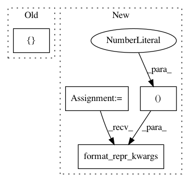

0b10d5eaa6abb77198e8eb025fea759c4629bca6,chaospy/distributions/collection/beta.py,PERT,__init__,#PERT#Any#Any#Any#Any#,237
Before Change
dist=beta_(alpha, beta),
lower=lower,
upper=upper,
repr_args=["mode=%s" % mode, "gamma=%s" % gamma],
)
After Change
upper=upper,
)
self._repr_args = [lower, mode, upper]
self._repr_args += chaospy.format_repr_kwargs(gamma=(gamma, 4))
In pattern: SUPERPATTERN
Frequency: 3
Non-data size: 4
Instances
Project Name: jonathf/chaospy
Commit Name: 0b10d5eaa6abb77198e8eb025fea759c4629bca6
Time: 2020-10-21
Author: jonathf@users.noreply.github.com
File Name: chaospy/distributions/collection/beta.py
Class Name: PERT
Method Name: __init__
Project Name: jonathf/chaospy
Commit Name: 0b10d5eaa6abb77198e8eb025fea759c4629bca6
Time: 2020-10-21
Author: jonathf@users.noreply.github.com
File Name: chaospy/distributions/collection/trunc_normal.py
Class Name: TruncNormal
Method Name: __init__
Project Name: jonathf/chaospy
Commit Name: 0b10d5eaa6abb77198e8eb025fea759c4629bca6
Time: 2020-10-21
Author: jonathf@users.noreply.github.com
File Name: chaospy/distributions/collection/beta.py
Class Name: Wigner
Method Name: __init__